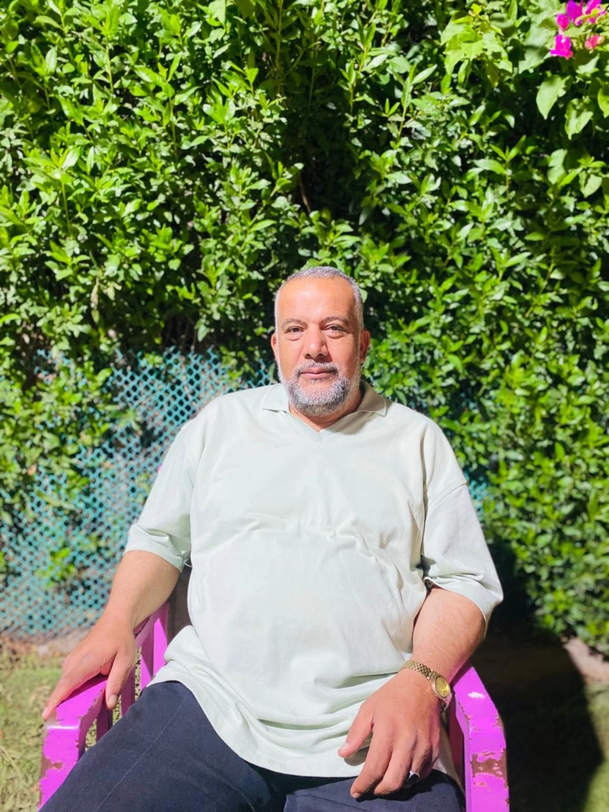
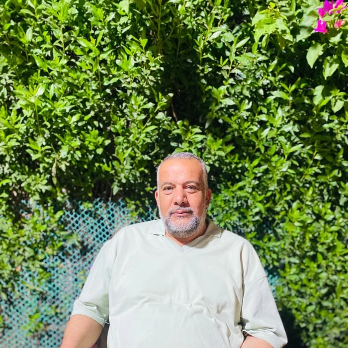

تأسيس قوي • فهم حقيقي • متابعة مستمرة
خلي ابنك يفهم
الحساب والعلوم
بطريقة يحبّها
مجموعات تعليمية للصفوف الرابع والخامس والسادس الابتدائي، بشرح مبسط وتدريب منتظم ومتابعة تساعد كل طالب يثبت مستواه ويتقدم.

معلم المرحلة الابتدائية
الأستاذ رضا القطاري
علومتجربة • ملاحظة • فهم
حسابفكرة • تدريب • إتقان
شرح مبسط✦واجبات وتدريبات✦متابعة مستوى الطالب✦مراجعات دورية✦مجموعات بأعداد مناسبة✦
شرح مبسط✦واجبات وتدريبات✦متابعة مستوى الطالب✦مراجعات دورية✦مجموعات بأعداد مناسبة✦
طريقة مختلفة في الشرح
مش مجرد حفظ للإجابة…
مش مجرد حفظ للإجابة…
الهدف إن الطالب يفهم الفكرة

تعليم مناسب لسن الطالب
شرح بخطوات واضحة وأمثلة قريبة من حياة الطالب، مع تكرار ذكي وتدريبات متنوعة تساعده يعتمد على نفسه في الحل.
تأسيس منظم
تثبيت الأساسيات قبل الانتقال للمستوى التالي.
تفاعل داخل الحصة
أسئلة ومشاركة وتطبيق بدل الاستماع فقط.
متابعة مستمرة
رصد نقاط القوة والجوانب التي تحتاج دعماً.
العام الدراسي 2026
اختار الصف والمجموعة المناسبة
قسمنا المواعيد إلى مسارين أوضح: المجموعات الأساسية والمجموعات المكثفة.
الحجز متاح الآن
لا توجد مجموعات مطابقة للاختيار الحالي.
ماذا يحصل الطالب؟
نظام دراسة يبني المستوى خطوة بخطوة
شرح منظم
تقسيم الدرس إلى نقاط صغيرة يسهل فهمها وتذكرها.
تدريب عملي
حل متدرج يبدأ من الأساسيات ويصل للأسئلة الأعلى مستوى.
قياس تقدم
متابعة مستمرة لتحديد التحسن والجوانب التي تحتاج مراجعة.
مراجعة مركزة
تثبيت أهم الأفكار قبل الاختبارات بطريقة عملية وسريعة.
+
⚛
√
ابدأ الحجز الآن
اختار المجموعة المناسبة
اختار المجموعة المناسبة
وابعت لنا على واتساب
اضغط على الزر، وسيتم تجهيز رسالة الاستفسار تلقائياً.
واتساب0111 999 5518
متاح للاستفسار عن المواعيد والأماكن المتبقية